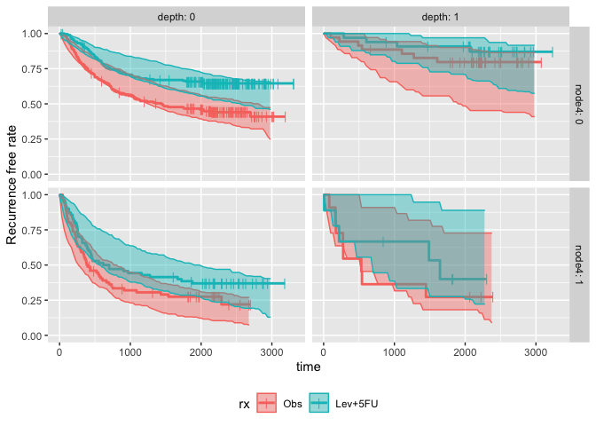
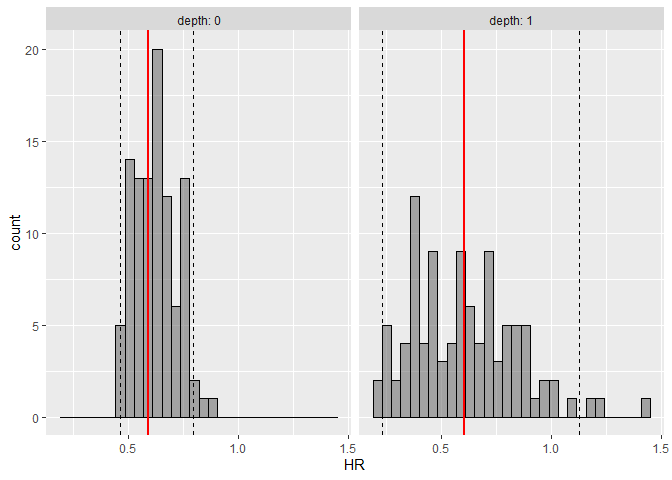

The goal of survParamSim is to perform survival simulation with parametric survival model generated from ‘survreg’ function in ‘survival’ package. In each simulation, coefficients are resampled from variance-covariance matrix of parameter estimates, in order to capture uncertainty in model parameters.
Installation
You can install the package from CRAN.
install.packages("survParamSim")Alternatively, you can install the development version from GitHub.
# install.packages("devtools")
devtools::install_github("yoshidk6/survParamSim")Example
This GitHub pages contains function references and vignette. The example below is a sneak peek of example outputs.
First, run survreg to fit parametric survival model:
library(dplyr)
#>
#> Attaching package: 'dplyr'
#> The following objects are masked from 'package:stats':
#>
#> filter, lag
#> The following objects are masked from 'package:base':
#>
#> intersect, setdiff, setequal, union
library(ggplot2)
library(survival)
library(survParamSim)
#> Warning: package 'survParamSim' was built under R version 4.2.3
set.seed(12345)
# ref for dataset https://vincentarelbundock.github.io/Rdatasets/doc/survival/colon.html
colon2 <-
as_tibble(colon) %>%
# recurrence only and not including Lev alone arm
filter(rx != "Lev",
etype == 1) %>%
# Same definition as Lin et al, 1994
mutate(rx = factor(rx, levels = c("Obs", "Lev+5FU")),
depth = as.numeric(extent <= 2))Next, run parametric bootstrap simulation:
sim <-
surv_param_sim(object = fit.colon, newdata = colon2,
censor.dur = c(1800, 3000),
# Simulating only 100 times to make the example go fast
n.rep = 100)
sim
#> ---- Simulated survival data with the following model ----
#> survreg(formula = Surv(time, status) ~ rx + node4 + depth, data = colon2,
#> dist = "lognormal")
#>
#> * Use `extract_sim()` function to extract individual simulated survivals
#> * Use `calc_km_pi()` function to get survival curves and median survival time
#> * Use `calc_hr_pi()` function to get hazard ratio
#>
#> * Settings:
#> #simulations: 100
#> #subjects: 619 (without NA in model variables)Calculate survival curves with prediction intervals:
km.pi <- calc_km_pi(sim, trt = "rx", group = c("node4", "depth"))
#> Warning in calc_km_pi(sim, trt = "rx", group = c("node4", "depth")): 339 of 800
#> simulations (#rep * #trt * #group) did not reach median survival time and these
#> are not included for prediction interval calculation. You may want to delay the
#> `censor.dur` in simulation.
km.pi
#> ---- Simulated and observed (if calculated) survival curves ----
#> * Use `extract_medsurv_pi()` to extract prediction intervals of median survival times
#> * Use `extract_km_pi()` to extract prediction intervals of K-M curves
#> * Use `plot_km_pi()` to draw survival curves
#>
#> * Settings:
#> trt: rx
#> group: node4
#> pi.range: 0.95
#> calc.obs: TRUE
plot_km_pi(km.pi) +
theme(legend.position = "bottom") +
labs(y = "Recurrence free rate") +
expand_limits(y = 0)
extract_medsurv_pi(km.pi) # Not implemented for calc_ave_km_pi yet; available for calc_km_pi
#> # A tibble: 32 × 7
#> node4 depth rx n description median quantile
#> <dbl> <dbl> <fct> <dbl> <chr> <dbl> <dbl>
#> 1 0 0 Obs 193 pi_low 1257. 0.0250
#> 2 0 0 Obs 193 pi_med 1895. 0.5
#> 3 0 0 Obs 193 pi_high 2713. 0.975
#> 4 0 0 Obs 193 obs 1436 NA
#> 5 0 0 Lev+5FU 192 pi_low 2429. 0.0250
#> 6 0 0 Lev+5FU 192 pi_med 2716. 0.5
#> 7 0 0 Lev+5FU 192 pi_high 2908. 0.975
#> 8 0 0 Lev+5FU 192 obs NA NA
#> 9 0 1 Obs 35 pi_low 1539. 0.0250
#> 10 0 1 Obs 35 pi_med 2558. 0.5
#> # … with 22 more rowsCalculate hazard ratios with prediction intervals:
hr.pi <- calc_hr_pi(sim, trt = "rx", group = c("depth"))
hr.pi
#> ---- Simulated and observed (if calculated) hazard ratio ----
#> * Use `extract_hr_pi()` to extract prediction intervals and observed HR
#> * Use `extract_hr()` to extract individual simulated HRs
#> * Use `plot_hr_pi()` to draw histogram of predicted HR
#>
#> * Settings:
#> trt: rx
#> ('Lev+5FU' as test trt, 'Obs' as control)
#> group: depth
#> pi.range: 0.95
#> calc.obs: TRUE
plot_hr_pi(hr.pi)
extract_hr_pi(hr.pi)
#> # A tibble: 8 × 5
#> depth rx description HR quantile
#> <dbl> <fct> <chr> <dbl> <dbl>
#> 1 0 Lev+5FU pi_low 0.464 0.0250
#> 2 0 Lev+5FU pi_med 0.624 0.5
#> 3 0 Lev+5FU pi_high 0.794 0.975
#> 4 0 Lev+5FU obs 0.590 NA
#> 5 1 Lev+5FU pi_low 0.233 0.0250
#> 6 1 Lev+5FU pi_med 0.597 0.5
#> 7 1 Lev+5FU pi_high 1.13 0.975
#> 8 1 Lev+5FU obs 0.607 NA